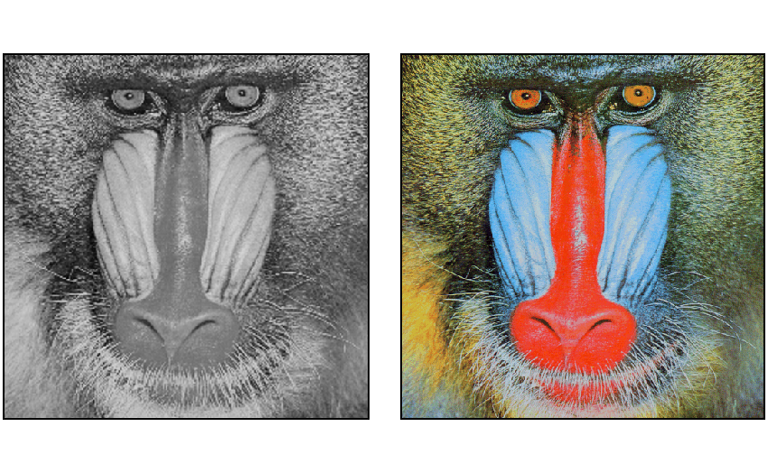
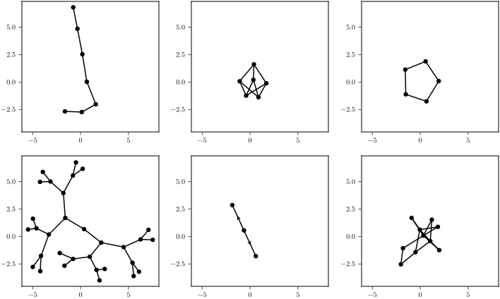
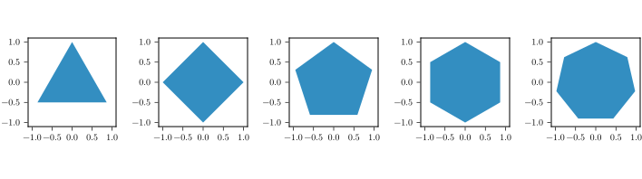

Ensemble Plots
For plotting multiple data with a single function to a figure, MakieMaestro defines a mosaic/mosaic! function in the Recipes module.
MakieMaestro.Recipes.mosaic — Function
mosaic([fn::Function=plot!], data...; <keyword-args>)
mosaic([fn::Function=plot!], datas::AbstractMatrix; <keyword-args>)Create a grid-like arrangement of plots. If passed a Matrix of objects to plot, the number of rows and columns is preserved in the grid.
Arguments
nrows/ncols: Number of rows / columnslinkaxes: Boolean to control axis linking (default: true)vargs...: Additional plotting arguments are passed to the plotting function
Returns
- A Makie Figure object containing the mosaic of plots that have linked axes
Examples
# Basic usage with vector of matrices
data = [rand(10,10) for i in 1:4]
fig = mosaic(data, 2, 2)
# Using with a 3D array
data3d = rand(10,10,4)
fig = mosaic(data3d)
# Using with a matrix
datamat = [rand(2,3) for _ in 1:3, _ in 1:4]
fig = mosaic(datamat)img_gray = testimage("mandril_gray")
img_color = testimage("mandril_color")If you would want to plot the two images side-by-side, you can use mosaic
Recipes.mosaic(Recipes.image!, img_gray', img_color'; axis=(;yreversed=true))
Or graphs in a mosaic with 2 rows (number of rows is set by nrows and columns with ncols)
using Graphs, GraphMakie
Recipes.mosaic(graphplot!,
lollipop_graph(2,5),
turan_graph(6, 2),
cycle_graph(5),
binary_tree(5),
star_digraph(3),
barabasi_albert(10, 2); nrows=2, linkaxes=false) # axes are linked by default
For more complicated functions, you can use the do syntax to define any alteration that you want to make to the data and the axes the data will be plotted on. The signature of the function that plots into the axis is (ax, data) -> Any which mutates the axis by plotting the data into it and may perform any modifications to the axis (e.g. change the title, style, etc.).
The default is to use Makie.plot! so if you have a type that implements plotting, you do not have to supply the function
polys = [Polygon([Point(sin(θ), cos(θ)) for θ in range(0; step=2π/N, length=N)]) for N in 4:7]
Recipes.mosaic(polys...; axis=(;aspect=1))